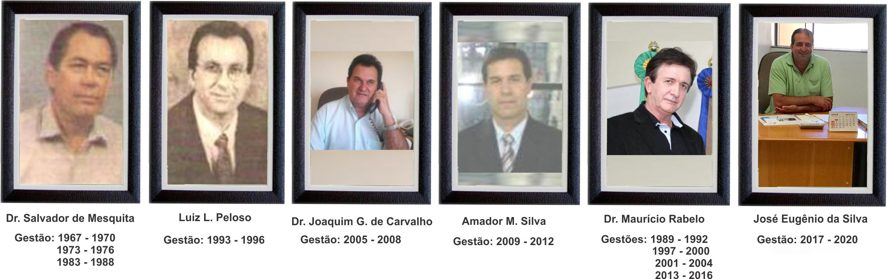

Campos Gerais é um município brasileiro do estado de Minas Gerais. Sua população estimada em 2019 é de 28.774 habitantes. Fica a 325 km de Belo Horizonte.
História
Tomé Soares de Oliveira, Francisco Graciano de Macedo, Simão Martins Ferreira e outros membros das famílias Soares e Martins iniciaram em 1827 a fundação, o povoado do Carmo do Campo Grande, hoje cidade de Campos Gerais.
Para esse fim, doaram à Igreja 50 alqueires de terras, de um lado e outro do Córrego da Divisa, limite este das duas fazendas daquelas famílias que então eram proprietárias do lugar, e desse córrego vem o nome porque tem sempre sido chamado de vulgo, de dentro e de fora do município, a cidade Divisa Velha, qualificativo que distingue o distrito da Divisa Nova.
A doação constituiu o patrimônio do Nossa Senhora do Carmo a padroeira da terra, com a Capela que aí erigiram. Pertence tempo à Freguesia de Lavras, município de São João Del Rei. Elevado a Curato, poucos anos depois o arraial foi, pela resolução de 14 de julho de 1832, elevado a Freguesia, pertencente ao então distrito de Três Pontas. Em 1860, José Silvestre de Oliveira, descendente dos fundadores do lugar, secundado, nesse ardor, pelo povo, fez uma capela de notáveis proporções para a época.
Depois, Antônio Joaquim Pereira, dando a notável importância de dez contos de réis, construiu-se outra capela no lugar da acima mencionada; é a atual Igreja do Rosário. A primeira, dos fundadores do arraial, ainda existe, há poucos anos, no Largo da Matriz. Dentro e fora dela se fazia o cemitério.
A 14 de setembro de 1870, o curato foi elevado a paróquia de que fazia parte o curato Córrego do Ouro (hoje de mesmo nome), até que, em 1873, Córrego do Ouro desintegrou-se em freguesia.
A lei n.º 309, de 16 de setembro de 1901, marcou nova era, criando o município e compondo-o de partes dos territórios de Boa Esperança e de Três Pontas, em parte foi restituído o território de Boa Esperança o distrito de Coqueiral, que durante 20 anos pertenceu a Campos Gerais.
A criação do município, como outros fatos de relevância na história de Campos Gerais, se deve aos esforços do então senador Dr. Josino de Paula Brito, de vasto prestígio na política do Sul de Minas. Em sua homenagem, a estação da Rede Mineira de Viação, que serve a cidade distante 23 km, denomina-se Estação Josino de Brito. Foi ele o primeiro chefe do Executivo Municipal, fazendo votar a organização municipal, com o respectivo Estatuto, e as primeiras Leis. Deu grande impulso ao município, estabelecendo as bases seguras de sua futura grandeza. Tomou parte como deputado na Constituinte Mineira, sendo reeleito em várias legislaturas, quer como deputado, quer como senador.
Curiosidades
- Fundada em 16 de setembro de 1901 (120 anos).
- Possui uma área total de 769,504 km².
- Tem uma densidade de 37,4 habitantes por km².
- Está a uma altitude de 843m acima do nível do mar.
- Possui um Índice de desenvolvimento de 0,682 (médio).
Prefeitos
- 